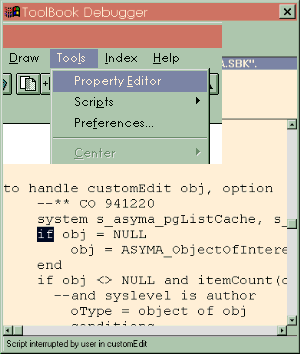

Australian Toolbook User Group


Sending keystrokes to Menus Solution by John R. Hall
Question: How can I activate a menu from openscript so its dropdown menuitems are visible without the user clicking the menu itself?
Answer: Check out the sendkeys function of tbwin30.dll. Example of calling up the file menu without keystrokes:
to handle buttonclick
linkdll "tb40win.dll"
INT sendKeys(STRING,INT)
end
get sendKeys("%{keyf}",1)
end
of course, the dll link can be anywhere before calling sendkeys and tb40win.dll could be tb30win.dll if you're running 3.0a.
Displaying a Menu item's help text on the Status Bar as the user moves amongst menu items
Question: I have created my own status bar since I wanted specialized buttons to appear on it. If I used the standard status bar each menu item's help text be displayed in the status bar automatically when the user moves among menu items.
I want to do the same for my own status bar. Is there an event message I can capture to automatically display a given menu item's help text in my status bar?
You could write an handler for each menu item. In the handler change the text of the status bar. Also, forward the handler if you wish.
But the status bar should be updated when a menu item is highlighted and not when it is actually selected. As far as I know, the script handler is called only when a menu item is selected and not highlighted. Is there an event I can handle when a menu item is highlighted and not actually selected? Do you have any other suggestions?
Take a look at the functions
setMenuHelpText() and setMenuItemHelpText()
in the ToolBook help file. There are examples listed in the help file as well.
To do what you want, you probably need to use
TranslateWindowMessage
to intercept the WM_MENUSELECT message sent whenever the selection moves to another menu item.
Figuring out what code gets run when you select a menu item Solution by Andy Bulka
You can interrupt any running script by pressing and holding down both SHIFT keys on your keyboard. You will drop into the debugger.
This is an excellent tip to know, because not only can you stop run-away scripts (infinite loops and recursions) but you can see what openscript code a particular menu item is triggering.

Remember, you can interrupt your running code at any time using this technique. For example - if your code has been running for a long time and you don't know what is happening - just press the SHIFT keys to have a peek.
After looking (via the debugger) at the relevant code, and perhaps stepping through a few statements, you can resume full-speed execution of your code by pressing CTRL-G from within the debugger.
Choosing EXIT from the Debugger also allows you to exit without running rhe remaining script.
Note that the screen may not refresh fully at this point, so you may have to put up with a few screen artifacts - a small price to pay for the power of double shifting!
 Warning
Warning
The double shift script 'stopper' does not work in versions of Toolbook 5 and below under NT 4.
Simulating the Windows Minimize control Solution by Erik Reitan Asymetrix
Question: Is there anyway I can control (put a script into) the minimize button?
Answer: When you press the minimize button a handler will be call in the viewer (even the main viewer) called stateChanged. You could use the following script let you know that the ToolBook window has been minimized:
to handle stateChanged
if state of self = "minimized"
request "minimized!"
end
forward
end
To access thousands more tips offline - download Toolbook Knowledge Nuggets